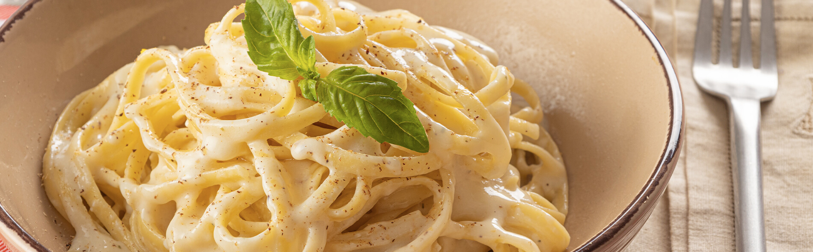

Mi Comida Favorita

Receta Para Hacer Pasta Con Salsa Alfredo
Ingredientes:
- Pasta de preferencia.
- Sal.
- Aceite.
- Margarina.
- Leche.
- Crema de Leche
- Salsa Alfredo.
- Mantequilla de Hacienda.
- Queso crema.
- Sal de ajo.
- Pimienta.
- Consome de Pollo.
- Orégano.
De esta forma preparo Pasta con salsa alfredo:
- Poner una olla con agua a hervir.
- Pasados unos minutos, echarle sal al gusto y un poco de aceite al agua.
- Cuando el agua esté hirviendo, echar la pasta en la olla del agua.
- Dejar hervir por minimo 9 minutos maximo 12, dependiendo el gusto. Menear la Pasta de vez en cuando para evitar que se pegue.
- Al pasar el tiempo, escurrir el agua de la pasta.
- En una olla aparte, echar margarina y un poco de aceite.
- Al derretirse la margarina, echarle leche, yo lo hago de manera tanteada, sin necesidad de medición.
- Echar la pasta en la olla con leche y menear.
- Agregar mantequilla de hacienda según su preferencia, una cucharada de queso crema, una caja pequeña de crema de leche, echarle sal de ajo, pimienta y consome de pollo según guste, yo lo echo tanteado.
- Al espesarse la salsa de la pasta, echaremos dos o tres cucharadas de salsa alfredo, meneamos.
- Al estar casi lista, espolvearemos orégano a la pasta(Opcional)